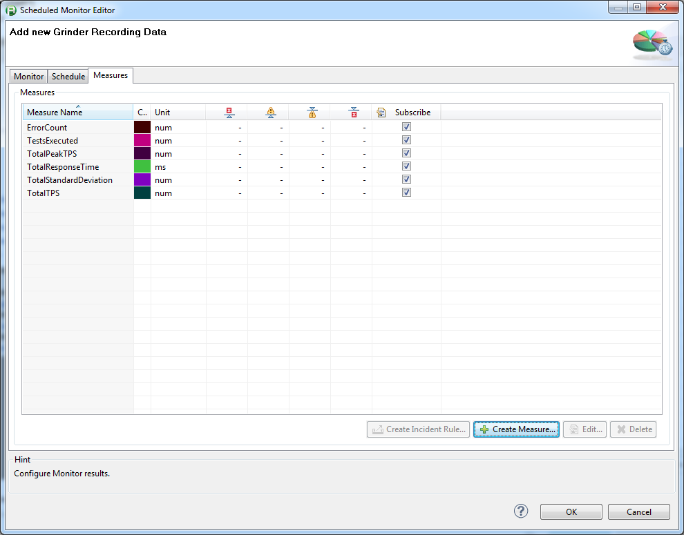
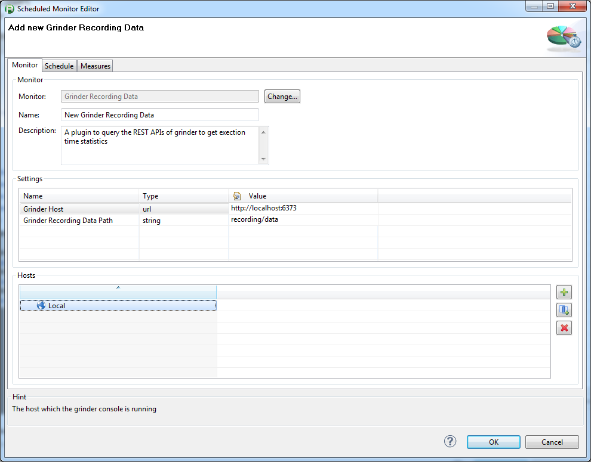
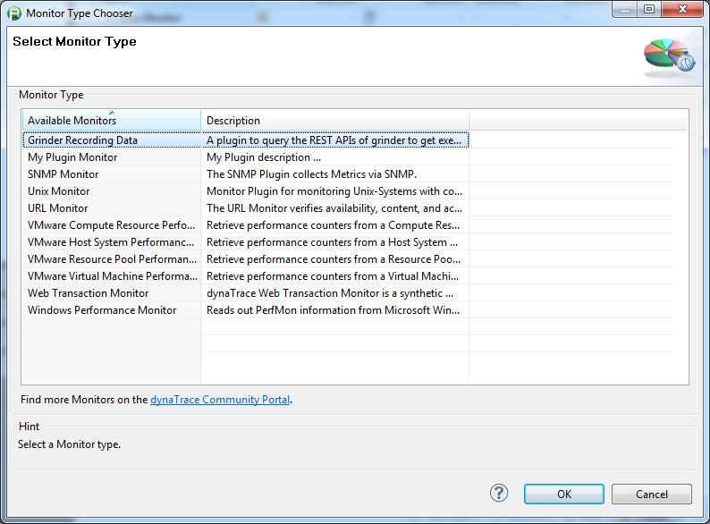
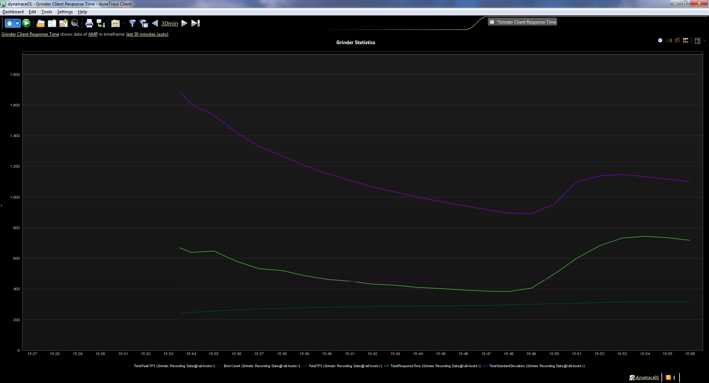

The Grinder plugin queries performance values while executing a test.
The plugin uses Grinder's REST Interface to query the following metrics:
Total Response Time
Number of Tests Executed
Number of Errors
Total Standard Deviation
Total TPS
Total Peak TPS
|
Plug-In Files |
org.measuredprogress.dynatrace.plugin.monitor.GrinderPlugin_1.0.0.jar |
|
Author |
Marc Holden (Holden.Marc@measuredprogress.org) |
|
dynaTrace Versions |
4.1+ |
|
License |
|
|
Support |
|
|
Known Problems |
|
|
Release History |
2012-09-04 Initial Release |
Import the Plugin into the dynaTrace Server via the dynaTrace Server Settings menu -> Plugins -> Install Plugin. For details how to do this please refer to the dynaTrace documentation.
This plugin talks to the Grinder Console running on a miminium version of 3.10 (Grinder 3.10 is the first Grinder release with REST API).
Once you have the plugin installed you can create a new monitor as shown in the following screenshots:
|
 |
 |
 |
The following screenshot shows a dashboard displaying some of the measures queried by the monitor:

Please use the Community Plugins and Extensions to discuss feedback and questions